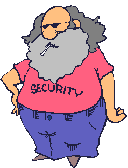
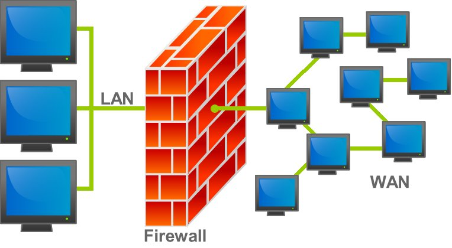
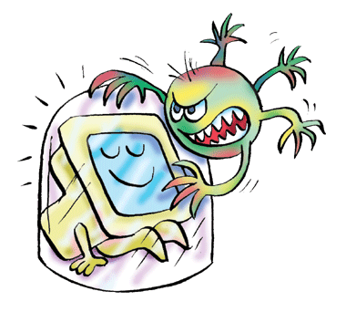
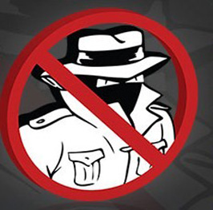

Beveiliging van je pc
Op deze pagina hebben we het over de beveiliging van je pc. Indien er al een goed (betalend) antivirusprogramma (zoals Panda, Norton, ...) op je pc aanwezig is, zijn de hier vermelde programma's overbodig.
Let wel
op:
- Een 'gekocht' antivirusprogramma moet jaarlijks worden verlengd.
Indien je termijn al een tijdje verstreken is, heb je er eigenlijk
geen bescherming meer aan en kan je misschien toch overwegen
één van de hier vermeldde programma's te installeren.
- Wanneer je meer dan één firewall of antivirus
installeert, riskeer je dat je pc niet meer zal functioneren.
Verwijder dus eerst het vorige voordat je een nieuwe antivirus
of firewall installeert!
- Een firewall beschermt een gebruiker (in een LAN) tegen aanvallen
vanuit een WAN (het internet).
- Het is best eerst een firewall programma te installeren en
daarna de andere programma's. Het is namelijk zo dat zeer regelmatig
de firewall om toelating zal vragen, nodig voor de installatie
/ het uitvoeren van uw programma's.
- Wanneer je een nieuwe pc koopt, is er meestal een tijdelijke
antivirus geïnstalleerd voor 1 maand. Indien je denkt dat
antivirusprogramma niet aan te kopen, is het allicht beter het
onmiddellijk te verwijderen en een antivirusprogramma uit onze
lijst te installeren.
- De meeste
beveiligingsprogramma's krijgen geregeld een update. Bij de lokale
kopies hieronder zal je dan ook meestal alleen een on-line installer
vinden ofwel helemaal geen.
De lokale kopies van de programma's kan je hier vinden.
Naam: 360 Total Security
Categorie: antivirus
Waardeoordeel: 5
Waardeoordeel op een schaal van 5 .. 1 (5='need to have', 3='good
to have', 1='nice to have')
Beschrijving:
360 Total Security is een zeer goed antivirusprogramma!
Naam: Avast!
Categorie: antivirus
Waardeoordeel: 5
Waardeoordeel op een schaal van 5 .. 1 (5='need to have', 3='good
to have', 1='nice to have')
Beschrijving:
Avast! is een zeer goed antivirusprogramma, beschikbaar in het
Nederlands. Het enige probleem is dat het niet samenwerkt met
Thunderbird (e-mailaprogramma). Als je Thunderbird gebruikt,
kan je beter voor Avira kiezen.
Het is echt aan te raden Avast! of Avira of Microsoft Security Essentials te installeren wanneer er geen ander (betalend) antivirusprogramma op je computer aanwezig is!
Naam: Avira
Categorie: antivirus
Waardeoordeel: 5
Waardeoordeel op een schaal van 5 .. 1 (5='need to have', 3='good
to have', 1='nice to have')
Beschrijving:
Avira is een interessant antivirusprogramma, zonder sleutel aan
te vragen. Het levert wel geen bescherming tegen virussen via
e-mail (voordat de mail wordt geopend). Engelstalig. Installatietips
Naam: PC tools firewall
Categorie: firewall
Waardeoordeel: 2
Waardeoordeel op een schaal van 5 .. 1 (5='need to have', 3='good
to have', 1='nice to have')
PC Tools Firewall bestaat niet meer alleenstaand. Je kan hier een de laatste versie downloaden.
Beschrijving:
Een firewall beschermt je computer tegen ongewenste indringers.
Allicht is dit een zeer nuttig middel om je pc te beschermen
in een omgeving met veel gebruikers (die allemaal zonder het
te weten ongewenste software op hun pc kunnen hebben.) Nederlands,
gebruiksvriendelijk.
Naam: Malwarebytes en ADWCleaner
Categorie: antispyware
Waardeoordeel: 3
Waardeoordeel op een schaal van 5 .. 1 (5='need to have', 3='good
to have', 1='nice to have')
Malwarebytes: Download
van internet
ADWCleaner: Download
van internet
Beschrijving:
Dit is een verwijdersoftware. Het is nuttig wanneer je pc tekenen
van dat soort infectie vertoont. Volgens sommige websites is
het zeer efficiënt.
ADWCleaner is van hetzelfde softwarehuis.
Naam: Spybot
Categorie: antispyware
Waardeoordeel: 3
Waardeoordeel op een schaal van 5 .. 1 (5='need to have', 3='good
to have', 1='nice to have')
Beschrijving:
Dit is een adware en spyware verwijdersoftware. Het is nuttig
wanneer je pc tekenen van dat soort infectie vertoont. Dit programma
kan real-time bescherming geven en is zeer populair. Nederlands.
Naam: Superantispyware
Categorie: antispyware
Waardeoordeel: 2
Waardeoordeel op een schaal van 5 .. 1 (5='need to have', 3='good
to have', 1='nice to have')
Beschrijving:
Dit is een adware en spyware verwijdersoftware. Het is nuttig
wanneer je pc tekenen van dat soort infectie vertoont. Volgens
sommige websites is het zeer efficiënt.